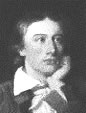

Deutsch/English << >>English only
Russian
/English << >>English /Russian
Deutsch/English << >>English
only

John Keats 
1795 -1821
(Джон Китс)
|
|
On the Grasshopper and Cricket
THE poetry of earth is never dead:
When all the birds are faint with the hot sun,
And hide in cooling trees, a voice will run
From hedge to hedge about the new-mown mead;
That is the Grasshopper’s—he takes the lead
In summer luxury,—he has never done
With his delights; for when tired out with fun
He rests at ease beneath some pleasant weed.
The poetry of earth is ceasing never:
On a lone winter evening, when the frost
Has wrought a silence, from the stove there shrills
The Cricket’s song, in warmth increasing ever,
And seems to one in drowsiness half lost,
The Grasshopper’s among some grassy hills.
СОНЕТ("Я кажется скорей умру...")
Sonnet
When I have fears that I may cease to be
Before my pen has gleaned my teeming brain,
Before high-piled books, in charactery,
Hold like rich garners the full ripened grain;
When I behold, upon the night’s starred face,
Huge cloudy symbols of a high romance,
And think that I may never live to trace
Their shadows, with the magic hand of chance;
And when I feel, fair creature of an hour,
That I shall never look upon thee more,
Never have relish in the faery power
Of unreflecting love; then on the shore
Of the wide world I stand alone, and think
Till love and fame to nothingness do sink.
The day is gone, and all its sweets are gone!
Sweet voice, sweet lips, soft hand, and softer breast,
Warm breath, light whisper, tender semitone,
Bright eyes, accomplished shape, and lang'rous waist!
Faded the flower and all its budded charms,
Faded the sight of beauty from my eyes,
Faded the shape of beauty from my arms,
Faded the voice, warmth, whiteness, paradise -
Vanished unseasonably at shut of eve,
When the dusk holiday -or holinight
Of fragrant-curtained love begins to weave
The woof of darkness thick, for hid delight;
But, as I've read love's missal through today,
He'll let me sleep, seeing I fast and pray.
Stanzas
IN a drear-nighted December,
Too happy, happy tree,
Thy branches ne'er remember
Their green felicity:
The north cannot undo them,
With a sleety whistle through them;
Nor frozen thawings glue them
From budding at the prime.
In a drear-nighted December,
Too happy, happy brook,
Thy bubblings ne'er remember
Apollo's summer look;
But with a sweet forgetting,
They stay their crystal fretting,
Never, never petting
About the frozen time.
Ah! would 'twere so with many
A gentle girl and boy!
But were there ever any
Writhed not at passed joy?
To know the change and feel it,
When there is none to heal it,
Nor numbed sense to steal it,
Was never said in rhyme.
Прилетай, любовь
СЮДА, ЛЮБОВЬ!
ТЕБЕ, ЛЮБОВЬ
Hither, hither, love -
'Tis a ahady mead -
Hither, hither, love!
Let us feed and feed!
Hither, hither, sweet -
'Tis a cowslip bed -
Hither, hither, sweet!
'Tis with dew bespread!
Hither, hither, dear,
By the breath of life,
Hither, hither, dear -
Be the summer's wife!
Though one moment's pleasure
In one moment flies,
Though the passion's treasure
In one moment des,
Yet it has not passed -
Think how near, how near!
And while it doth last,
Think how dear, how dear!
Hither, hither, hither
Loveits boon has sent
If I die and wither
I shall die content!
Sweet, sweet is the greetings of eyes
And sweet is the voice in its greeting.
When adieux have grown old and goodbyes
Fade away where old time is retreating.
Warm the nerve of a welcoming hand
And earnest a kiss on the brow,
When we meet over sea and o'er land
Where furrows are new to the plough.
ЭНДИМИОН (отрывок)
Красота не стареет во веки веков,
1 A thing of beauty is a joy for ever:
2 Its loveliness increases; it will never
3 Pass into nothingness; but still will keep
4 A bower quiet for us, and a sleep
5 Full of sweet dreams, and health, and quiet breathing.
6 Therefore, on every morrow, are we wreathing
7 A flowery band to bind us to the earth,
8 Spite of despondence, of the inhuman dearth
9 Of noble natures, of the gloomy days,
10 Of all the unhealthy and o'er-darkened ways
11 Made for our searching: yes, in spite of all,
12 Some shape of beauty moves away the pall
13 From our dark spirits. Such the sun, the moon,
14 Trees old and young, sprouting a shady boon
15 For simple sheep; and such are daffodils
16 With the green world they live in; and clear rills
17 That for themselves a cooling covert make
18 'Gainst the hot season; the mid forest brake,
19 Rich with a sprinkling of fair musk-rose blooms:
20 And such too is the grandeur of the dooms
21 We have imagined for the mighty dead;
22 All lovely tales that we have heard or read:
23 An endless fountain of immortal drink,
24 Pouring unto us from the heaven's brink.
25 Nor do we merely feel these essences
26 For one short hour; no, even as the trees
27 That whisper round a temple become soon
28 Dear as the temple's self, so does the moon,
29 The passion poesy, glories infinite,
30 Haunt us till they become a cheering light
31 Unto our souls, and bound to us so fast,
32 That, whether there be shine, or gloom o'ercast;
33 They always must be with us, or we die.
"Он не может на смертное время..."
On Fame
"You cannot eat your cake and have it too." -Proverb
How fevered is the man who cannot look
Upon his mortal days with temperate blood,
Who vexes all the leaves of his life's book,
And robs his fair name of its maidenhood;
It is as if the rose should pluck herself,
Or the ripe plum finger its misty bloom,
As if a Naiad, like a meddling elf,
Should darken her pure grot with muddy gloom;
But the rose leaves herself upon the briar,
For winds to kiss and grateful bees to feed,
And the ripe plum still wears its dim attire;
The undisturbed lake has crystal space;
Why then should man, teasing the world for grace,
Spoil his salvation for a fierce miscreed?
On Seeing the Elgin Marbles
There was a naughty Boy
And a naughty Boy was he.
He ran away to Scotland
The people for to see
Then he found
That the ground
Was as hard,
That a yard
Was as long,
That a song
Was as merry,
That a cherry
Was as red -
That lead
Was as weighty
That fourscore
Was as eighty,
That a door
Was as wooden
As in England -
So he stood in his shoes
And he wonder'd
He wonder'd,
He stood in his shoes
And he wonder'd.
Ах, Одиночество! Уж если мы должны
|
|
© 2000 Elena and Yacov Feldman